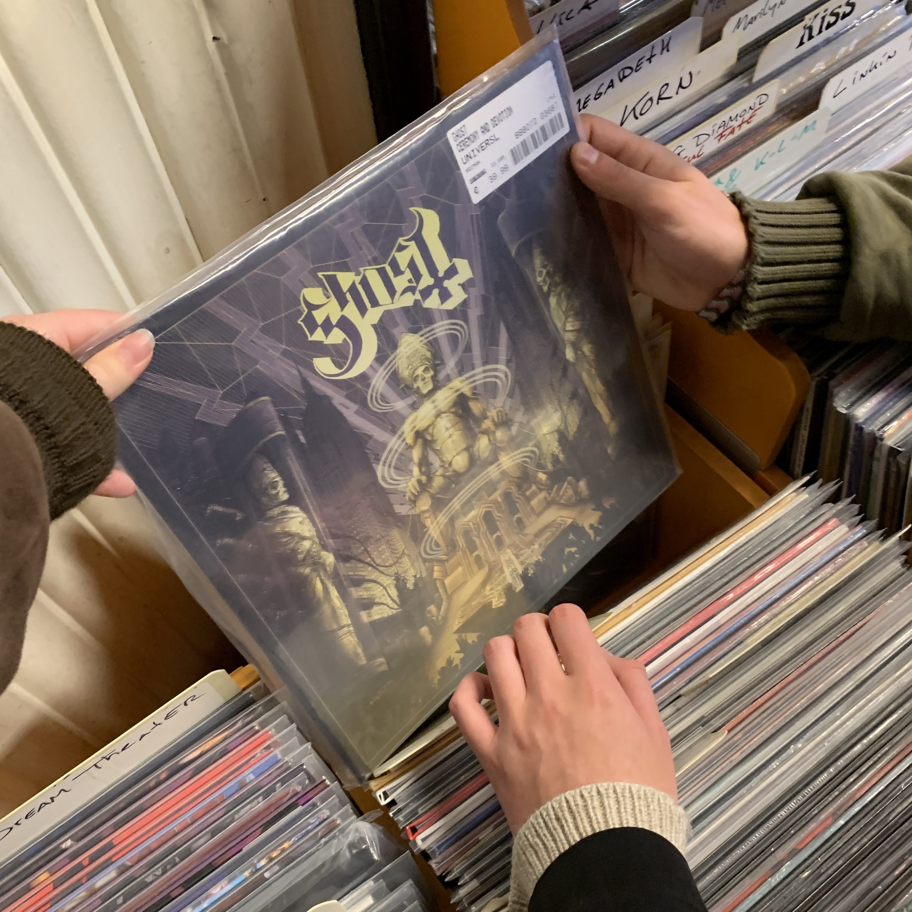

Record van de week
Whitesnake - Slip of the Tongue
Genre: Classic Rock
Release jaar: 1989
Label: Geffen Records
Meer om te ontdekken
White Lion - Mane Attraction
- Label: Atlantic Records
- Format: Vinyl, CD, Album
- Land: VS
- Genre: Pop/Rock, Grunge
Waarom fysieke muziek?
Door fysieke muziek te kopen steun je direct de artiest. Veel streaming platformen zoals Spotify kan je gebruiken door een abbonnement te kopen, maar als je een plaat of CD koopt hoef je hier natuurlijk niet maandelijks voor te betalen. Naast dat het een eenmalige aankoop is en je direct de artiest kan steunen (in plaats van een streaming platform, waarna de artiest een deel van de inkomsten krijgt) zijn er steeds meer mensen die kiezen voor LP's of CD's om zo het album echt vast te kunnen houden.
Het is de meest tastbare vorm van muziek. LP's komen vaak in mooi versierde hoezen en de platen zijn vaak versierd of mooi gekleurd. CD's hebben een hoes waar vaak een boekje in zit met meer informatie over de artiest of meer informatie over de liedjes in het album, bijvoorbeeld lyrics.
